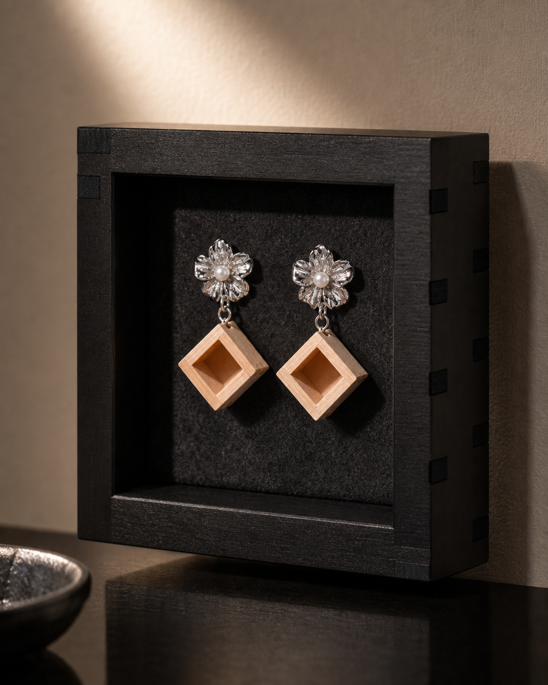
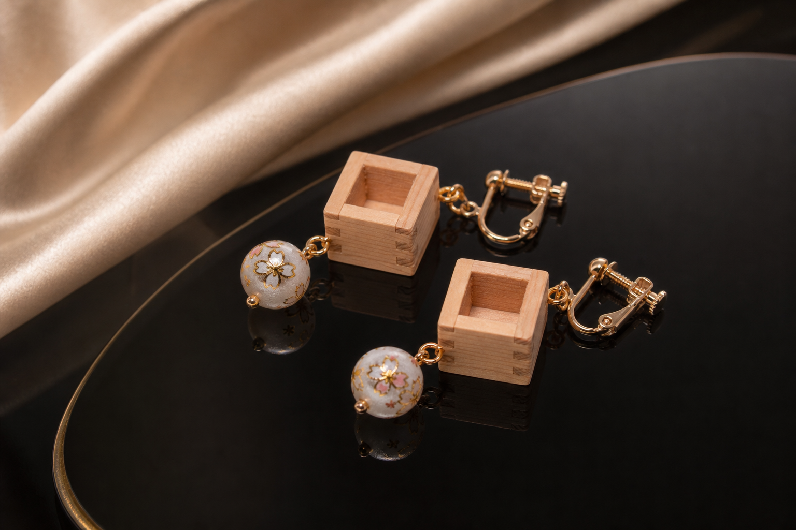
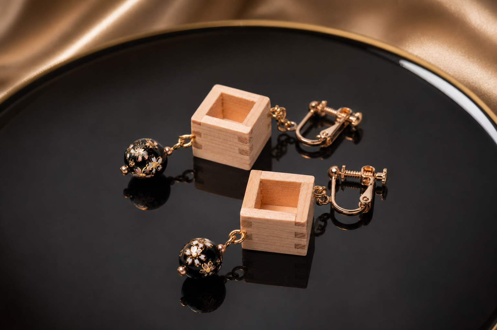
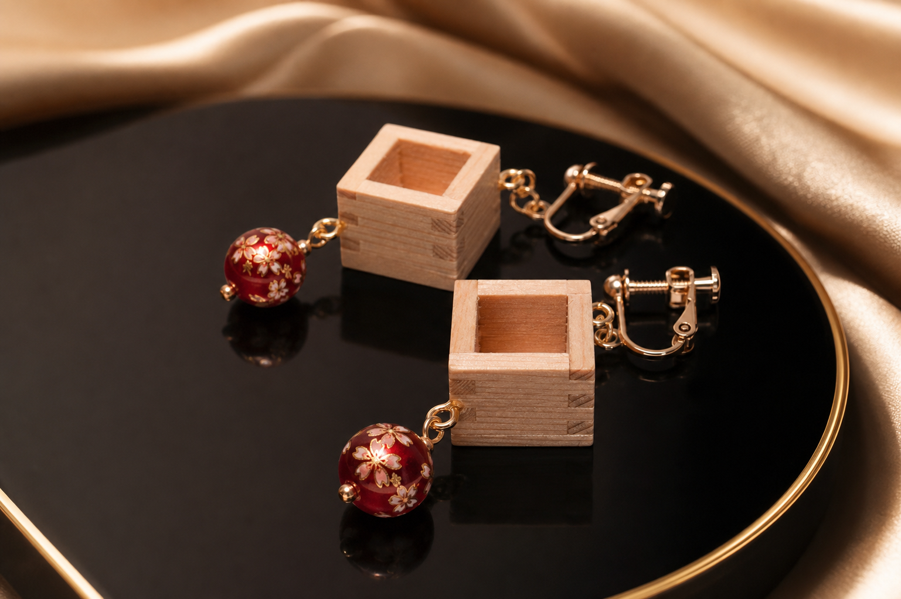
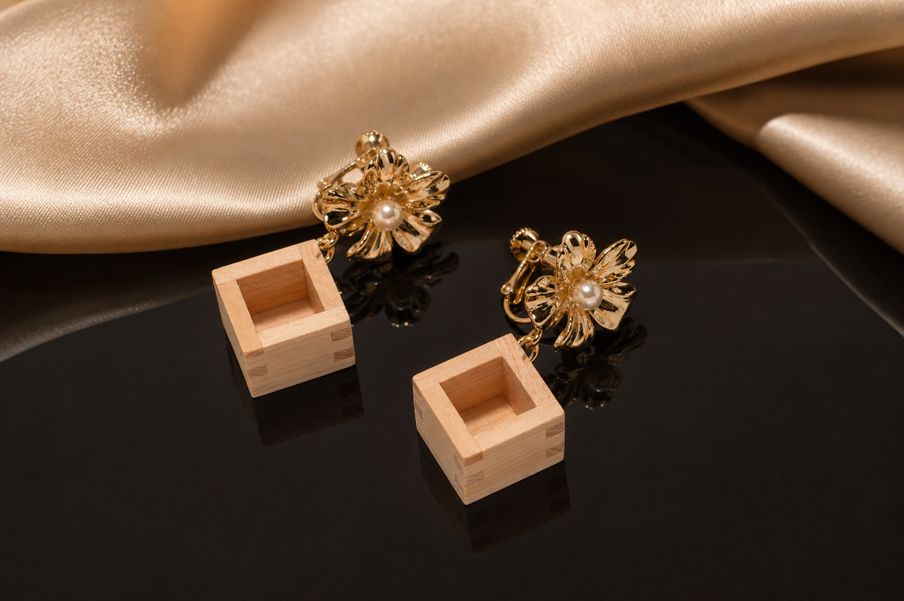
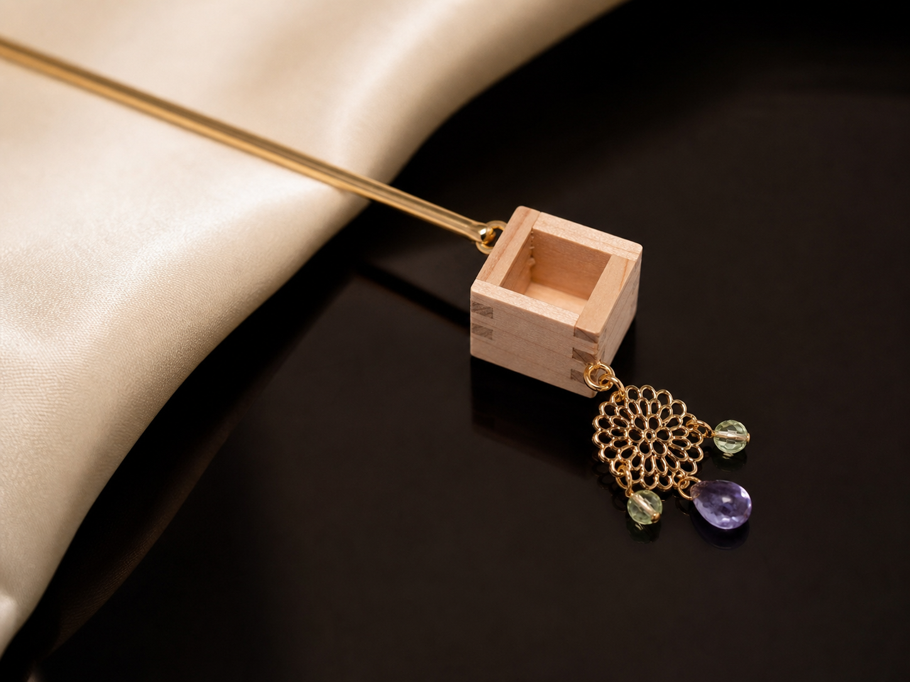
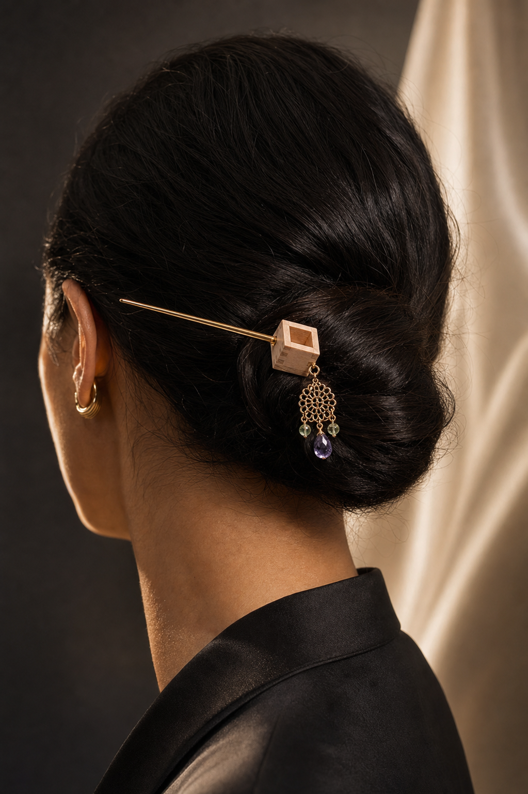

イヤリング、ピアス、ネックレス、かんざし、バッジ。すべての作品を、身につける時間と飾る時間のために。

耳に添える小さな枡。金具の存在まで美しく、黒いディスプレイケースに戻しても作品として残ります。

白い玉と金色の金具。やわらかな余白を耳元に。

黒と金の余韻。静かに印象を残す一点。

赤い花玉が、ひのきに小さな熱を灯す。

花の金具とひのき。明るさを抑えた華やぎ。
揺れるひのき、花、手毬、とんぼ玉。動きの中で、小さな日本のかたちが現れます。
真珠を抱いた花。銀色の光とひのきの静けさ。
白い手毬と金色の金具。やわらかな余白を耳元に。
赤い花玉とひのき。耳元に小さな灯りを。
深い青のとんぼ玉。日本の硝子が静かに揺れる。
KUMIKIの中心にあるかたち。胸元に、ひのきの輪郭と静かな存在感を残します。
金色とひのきの温度。KUMIKIの象徴的な一本。
銀の輪郭、静かな枡。光を抑えた端正な表情。
髪に挿す、小さな建築。和装だけでなく、現代の装いに静かな儀式性を添えます。

透かし菊と天然石。髪に残る、ひのきの気配。

身につけても、飾っても。一本で空気を変える作品。
ジャケット、バッグ、コートに。KUMIKIの枡記号を、日々の装いに残すための小さな印。
KUMIKIの印を、身につける形に。
ジャケットやコートに、静かな余白を。
バッグに、小さな日本を。
気になるジャンルや作品名をお知らせください。素材、金具、仕上げ、納期について個別にご案内します。